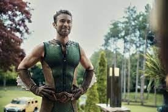

The Deep
Chace Crawford como Kevin / The Deep, un miembro de los Siete que posee la habilidad de comunicarse con la vida acuática y respirar bajo el agua. Los otros miembros de los Siete lo miran con desprecio debido a su estatus de héroe acuático simbólico del grupo. Motivado por sus sentimientos de inferioridad y dismorfia corporal, acosa a Starlight, que ella expone públicamente, lo que lo lleva a ser expulsado de los Siete por el bien de las relaciones públicas. Después de ser reasignado a Sandusky (Ohio), se une a «La Iglesia del Colectivo» con la esperanza de volver a unirse a los Siete y rehabilitar su imagen. También el actor Patton Oswalt presta su voz a las agallas de Deep.